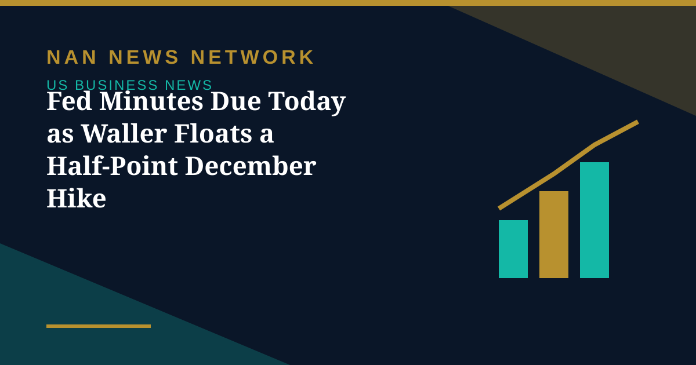

Fed Minutes Due Today as Waller Floats a Half-Point December Hike

The Federal Reserve will release minutes from last month's Federal Open Market Committee meeting at 2 p.m. ET on Wednesday, as investors look for clues about the central bank's next move on interest rates, Investopedia reported on November 18.
Waller raises the prospect of a bigger hike
Early on Wednesday, Fed Governor Christopher Waller told CNBC that the Fed may need a half-point rate hike, Investors.com reported, a remark that weighed on stocks shortly after the opening bell. The Dow industrials dropped about 0.7 percent while the S&P 500 lost about 0.2 percent in early trading, even as Nvidia rallied on its strong earnings. The Federal Open Market Committee is scheduled to meet on December 8 and 9.
A market on edge
The minutes arrive after a four-day losing streak for the Nasdaq and the S&P 500, with futures pointing to a mostly higher open on Wednesday as AI-related stocks rebounded on Nvidia's results. Traders will parse the minutes for how much support there is inside the Fed for a larger December move, and for any discussion of the economic data the committee is watching most closely.
Sources: Investors.com, November 18, 2026; Investopedia, November 18, 2026
More on US Business News
- Target and Lowe's Shares Fall After Earnings as Retail Results Test the Consumer
- Disney and Home Depot Both Beat Earnings Before the Open as Consumer Names Hold Up
- Oil Slips as Recovering Middle East Exports Blunt Gulf Tensions and IEA Sees a Surplus
- Chip Rout Drags US Futures Lower as Asia Markets Plunge Ahead of Nvidia Earnings
- New York Manufacturing Growth Slows Sharply as Empire State Index Falls to 7.8
- Nasdaq and S&P 500 Fall Friday as Producer Prices Jump 6.5%, Fastest Since 2022
- Nvidia Reports Earnings Tuesday as Investors Watch China Exposure and the CEO Search
- Anthropic Sets $70-$78 IPO Price Range Ahead of Nasdaq Debut on November 19
- FAA Ground Stop Halts All US Departures for Four Hours as 8,600 Flights Are Cancelled
- Microsoft Outage Knocks Out Outlook, Teams and Copilot for More Than 12 Hours
- Bitcoin Falls Below $70,000 for First Time Since August as Crypto Slides
- easyJet Shareholders Approve £5.7 Billion Apollo Takeover
- Treasury Yield Tops 5% as Markets Price in a December Fed Rate Hike
- Stocks Look to Rebound as Nasdaq Futures Rise 1.8% Despite Fed Rate-Hike Fears
- OpenAI Revenue Hit $10 Billion in Q3, but Losses Grew to $10.9 Billion, Report Says
- October CPI Rose 0.4% as Fed's Waller Urges a Rate Rise 'Sooner, Rather Than Later'
- Anthropic IPO Moves Forward With Plan to Sell Over 800 Million Shares at $70 to $78
- Nvidia Shares Slide as Board Opens Investigation Into CEO Jensen Huang
- Wall Street Futures Rally on Bargain-Hunting as Oil Falls; CPI Due Tuesday
- Nasdaq Enters Correction as Tech Sell-Off Wipes $2.3 Trillion in a Week
- Berkshire Hathaway Operating Earnings Fall 5.8% as Buybacks Hit $9.6 Billion
- Tech Stocks Stage Partial Rebound as Nasdaq Rises 1.1% After Thursday's Rout
- Microsoft Winds Down Oracle AI Cloud Deal as Older Nvidia Chips Lose Their Fit
- US Adds 165,000 Jobs in October, Smashing Forecasts as Unemployment Eases to 4.1%
- Bank of England Raises Rates to 4% in First Hike Since 2023, Warns More May Follow
- Wall Street Rallies After the Midterms: Dow Jumps 1,569 Points in Its Best Day Since April 2025
- October Jobs Report Due Friday: Economists Expect About 65,000 New Jobs as the Fed Watches
- US Futures Plunge, Then Rebound, as Democrats Sweep Congress
- Wall Street on Election Eve: Dow Slips, S&P and Nasdaq Gain Ahead of Results
- Wall Street Mixed on Election Day as Nasdaq Sits in Correction and Oil Swings
- Pfizer Raises 2026 Forecast After Third-Quarter Beat Led by Eliquis and Cancer Drugs
- Berkshire Hathaway Enters Earnings Week Under Scrutiny as GEICO Weakens
- Wall Street Futures Rebound After a Brutal October for Tech Stocks
- S&P Downgrades Meta's Credit Outlook to Negative After $95 Billion AI Debt Plan
- Week Ahead: Apple, Palantir and AMD Earnings Plus Jobs Report Test an AI-Wary Market
- October Ends in the Red for Tech: Nasdaq Down 5.3% for the Month as Investors Rotate to Defensives
- Exxon and Chevron Beat Profit Forecasts as a $6.3 Billion Binance Hack Hits Crypto Stocks
- Stocks Fall Thursday as Alphabet's Worst Day Ever Drags the Nasdaq Down 1.4%
- US Labor Costs Rose 0.8% in Q3 as Wage Growth Slowed, Easing — but Not Erasing — Inflation Fears
- Fed Holds Rates at 3.75%–4% in 10–2 Vote as Warsh Says Politics Played No Role
- US Economy Grew 3.4% in Q3, Fastest in a Year, Beating Forecasts
- Wall Street Rallies for Second Day as AI Stocks Lead Ahead of Fed Decision
- Fed Decision Day: Markets Price a Hold as Warsh Faces First Big Test
- Anthropic IPO Filing Lifts Stocks as Wall Street Rallies
- Broadcom's $63 Billion Financing Powers Anthropic Technology Deal
- Wall Street Heads Into Fed Week as Oil Near $117 and Stocks Slip
- Trend Hedge Funds Suffer Worst Week Since 2024 as AI Stocks Slide, Goldman Says
- Meta Lifts 2026 AI Spending Toward $145 Billion and Adds a Nonvoting Stock Class
- OpenAI Nears a $30 Billion Round at a $1.25 Trillion Valuation, Reports Say
- Rivian Buys UK Startup Third Dimension to Build Its Robotaxi Simulator